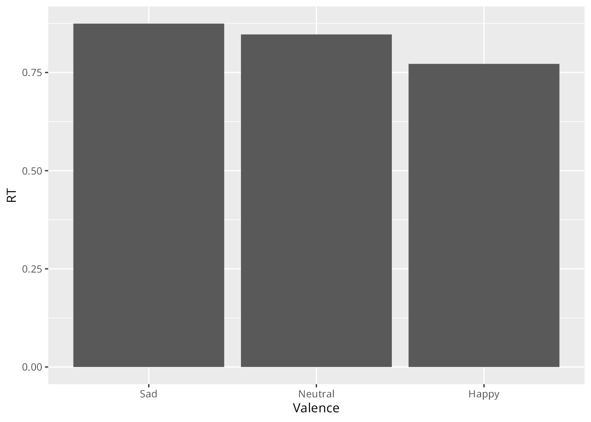
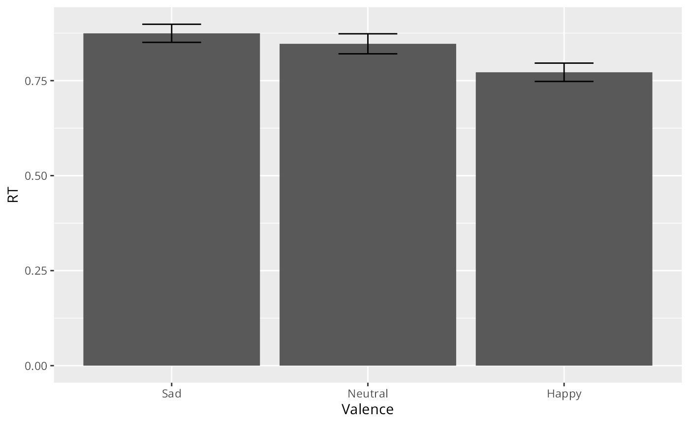
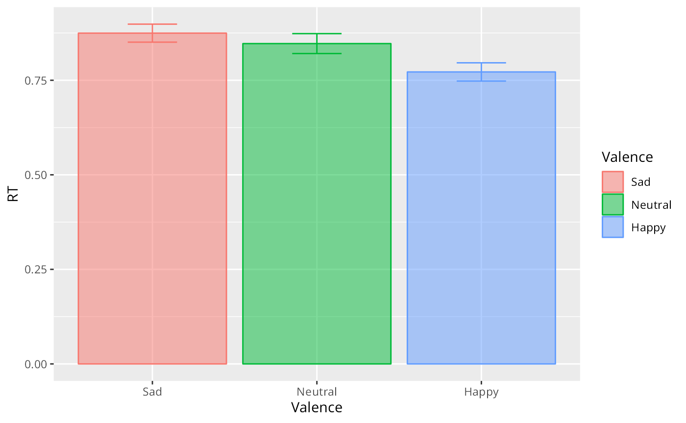
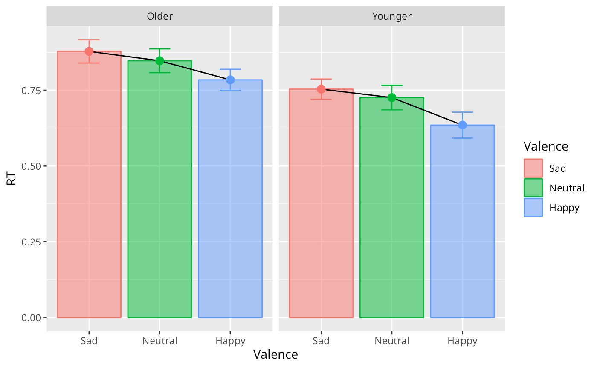
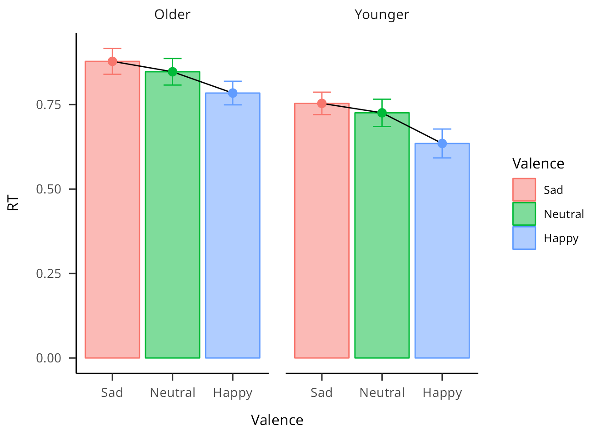
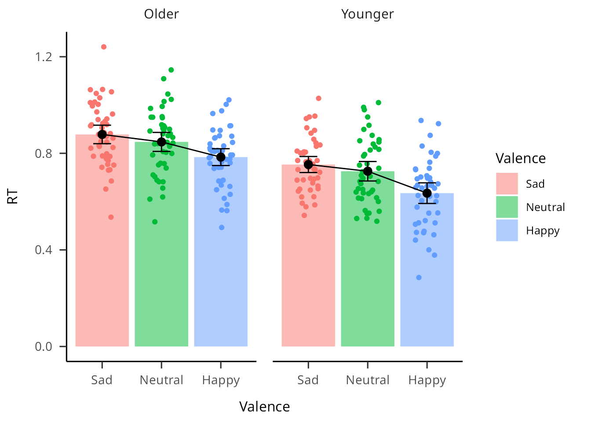
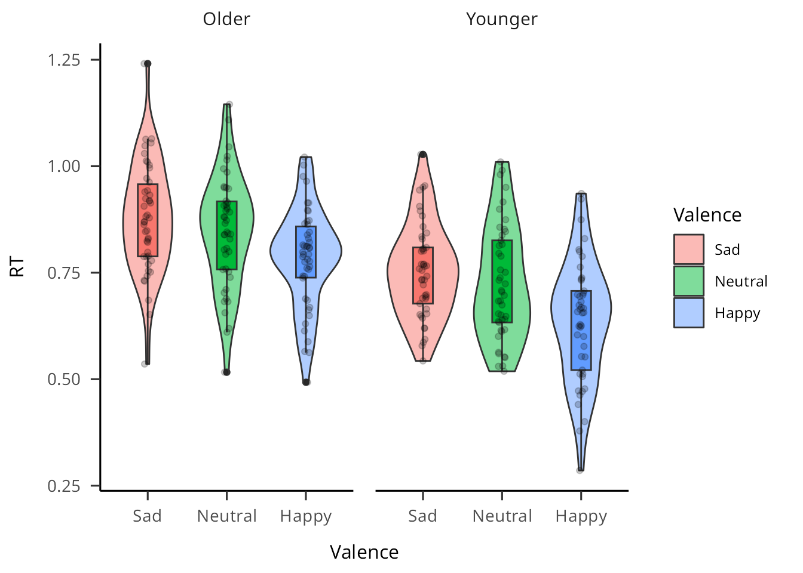
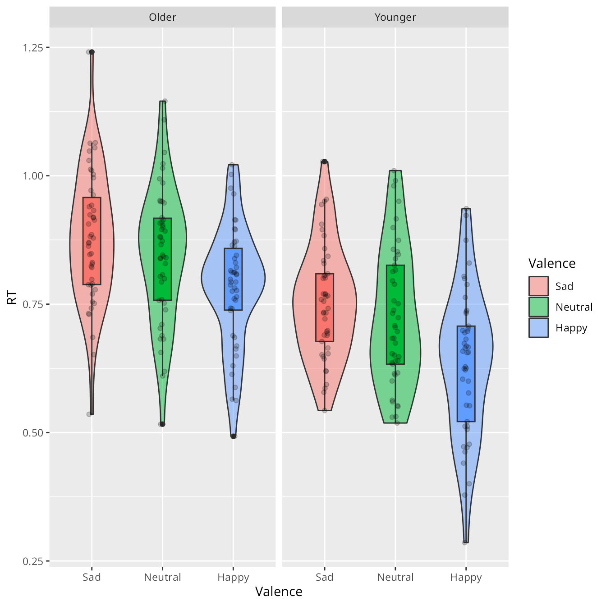
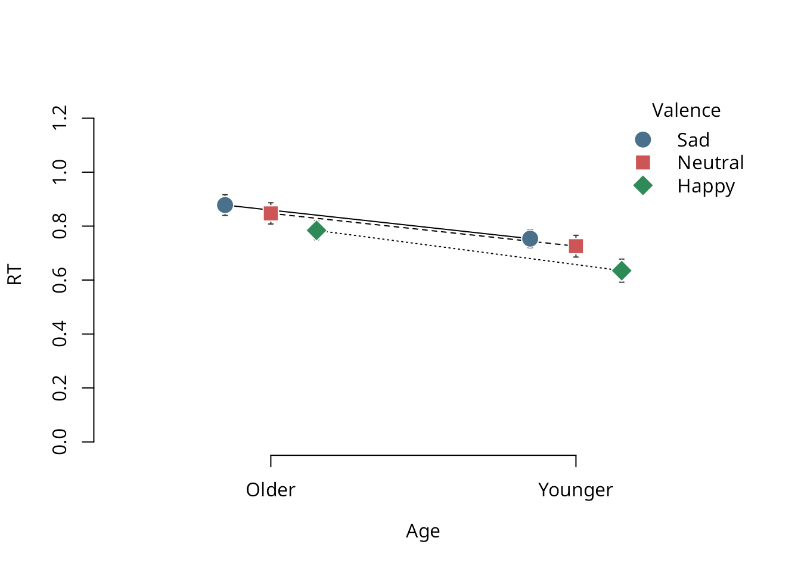
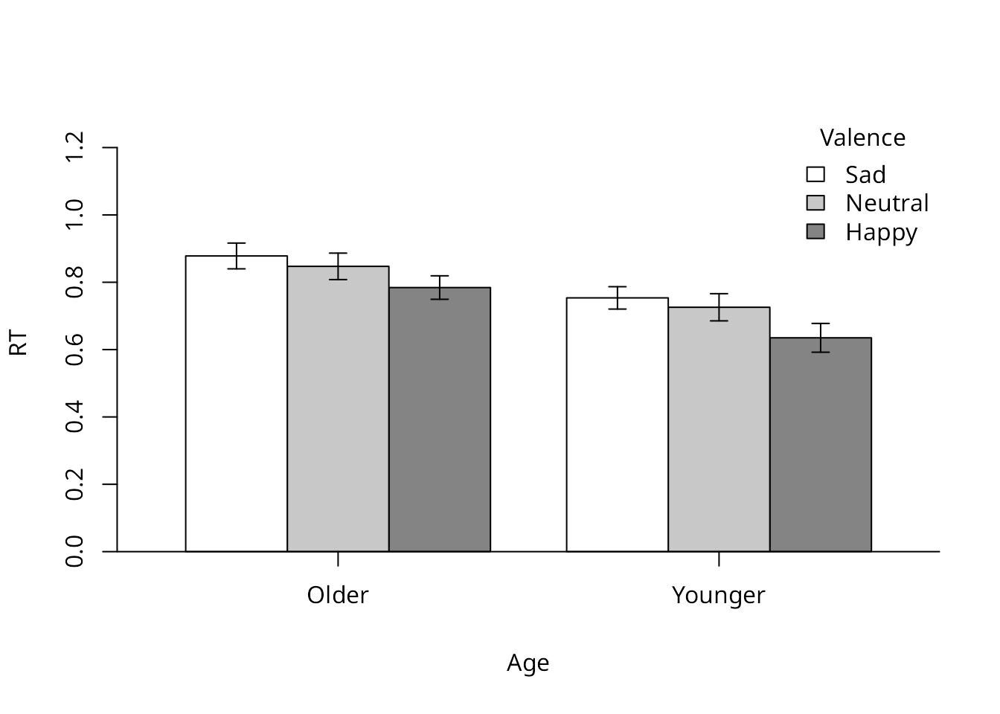

basic-plotting.RmdFirst load libraries.
library(dataviz)
library(ggplot2)
library(magrittr)
library(dplyr)
#>
#> Attaching package: 'dplyr'
#> The following objects are masked from 'package:stats':
#>
#> filter, lag
#> The following objects are masked from 'package:base':
#>
#> intersect, setdiff, setequal, union
library(papaja)
#> Loading required package: tinylabelsExamine data
data_ala
#> # A tibble: 273 × 3
#> Participant Valence RT
#> <dbl> <fct> <dbl>
#> 1 1 Happy 0.871
#> 2 1 Neutral 0.880
#> 3 1 Sad 0.849
#> 4 2 Happy 0.891
#> 5 2 Neutral 0.925
#> 6 2 Sad 0.958
#> 7 3 Happy 0.588
#> 8 3 Neutral 0.682
#> 9 3 Sad 0.828
#> 10 4 Happy 0.804
#> # ℹ 263 more rowsy axis
and what goes on the x axis.stat_summary to say that we don’t want to plot the
raw data, we want a summary statistic instead.geom to say that we want a bar chart, and
fun to say that we want the mean (as opposed to the median,
say).
ggplot(data_ala, aes(y=RT, x=Valence))+
stat_summary(geom="bar", fun="mean")
We can add error bars
ggplot(data_ala, aes(y=RT, x=Valence))+
stat_summary(geom="bar", fun="mean")+
stat_summary(geom='errorbar', width=0.3, fun.data = mean_cl_normal, fun.args=list(conf.int=.95))
We can use colour to distinguish the levels of Valence.
ggplot(data_ala, aes(y=RT, x=Valence, colour=Valence, fill=Valence))+
stat_summary(geom="bar", fun="mean", alpha=0.5)+
stat_summary(geom='errorbar', width=0.3, fun.data = mean_cl_normal,
fun.args=list(conf.int=.95), show.legend = F)
Let’s imagine that we had data on the age of the participants: Younger vs Older
Let’s imagine that younger people were quicker to respond.
data_ala_age <- data_ala_age %>%
mutate(RT.adjustment=runif(n=nrow(data_ala_age), min=0, max=0.25)) %>%
mutate(RT=ifelse(Age=="Younger", RT-RT.adjustment, RT))Let’s separate out the two groups of Age
ggplot(data_ala_age, aes(y=RT, x=Valence, colour=Valence, fill=Valence))+
stat_summary(geom="bar", fun="mean", alpha=0.5)+
stat_summary(geom="line", fun="mean", aes(group=1), colour="black")+
stat_summary(geom='errorbar', width=0.3, fun.data = mean_cl_normal,
fun.args=list(conf.int=.95), show.legend = F)+
stat_summary(geom='point', fun="mean", size=3, show.legend = F)+
facet_grid(~Age)
Let’s change the theme. This one is theme_apa() which is
supposed to be APA-compliant. It comes from a package called
papaja
ggplot(data_ala_age, aes(y=RT, x=Valence, colour=Valence, fill=Valence))+
stat_summary(geom="bar", fun="mean", alpha=0.5)+
stat_summary(geom="line", fun="mean", aes(group=1), colour="black")+
stat_summary(geom='errorbar', width=0.3, fun.data = mean_cl_normal,
fun.args=list(conf.int=.95), show.legend = F)+
stat_summary(geom='point', fun="mean", size=3, show.legend = F)+
facet_grid(~Age)+
theme_apa()
Let’s add raw data points - see how this is overkill?
ggplot(data_ala_age, aes(y=RT, x=Valence, fill=Valence))+
geom_jitter(width=0.2, height=0, show.legend = F, aes(color=Valence, fill=Valence))+
stat_summary(geom="bar", fun="mean", alpha=0.5)+
stat_summary(geom="line", fun="mean", aes(group=1), colour="black")+
stat_summary(geom='errorbar', width=0.3, fun.data = mean_cl_normal,
fun.args=list(conf.int=.95), show.legend = F)+
stat_summary(geom='point', fun="mean", size=3, show.legend = F)+
facet_grid(~Age)+
theme_apa()
There are better ways to represent the distribution of raw data points together with summary statistics.
ggplot(data_ala_age, aes(y=RT, x=Valence, fill=Valence))+
geom_violin(alpha=0.5)+
geom_boxplot(width=0.25, fatten=0, show.legend = F)+
#geom_dotplot(binaxis='y', binwidth=.025, stackdir='center', fill = "grey", dotsize=0.5, position=position_dodge(0.75)) +
geom_jitter(width=0.05, height=0, alpha=0.2, show.legend = F)+
#theme_classic()+
theme_apa()
Papaja has some APA-related plot styles which look nice, but the syntax is different.
apa_beeplot(
data = data_ala_age
, id = "Participant"
, dv = "RT"
, factors = c("Age", "Valence")
, args_points = list(cex = 2, bg = c("skyblue4", "indianred3", "seagreen4"), col = "white")
, args_swarm = list(cex = 1.2)
, args_error_bars = list(length = 0.02, col = "grey20")
)
apa_lineplot(
data = data_ala_age
, id = "Participant"
, dv = "RT"
, factors = c("Age", "Valence")
, args_points = list(cex = 2, bg = c("skyblue4", "indianred3", "seagreen4"), col = "white")
, args_error_bars = list(length = 0.02, col = "grey20")
)
apa_barplot(
data = data_ala_age
, id = "Participant"
, dv = "RT"
, factors = c("Age", "Valence")
)